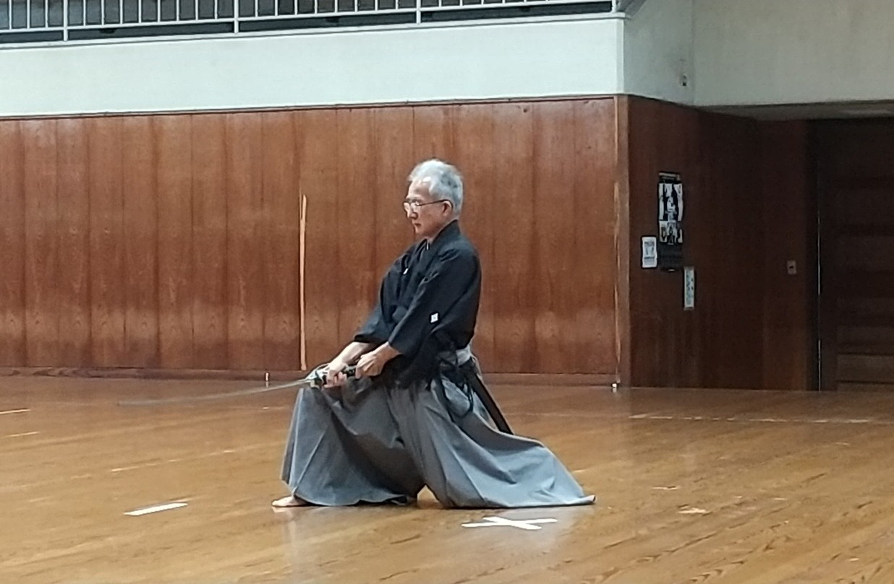
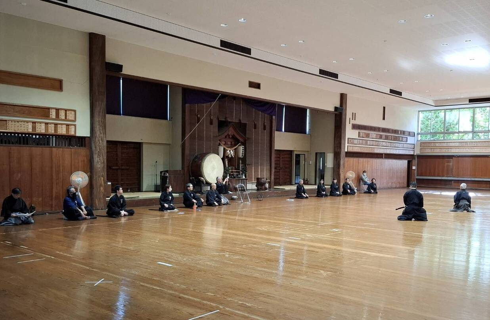
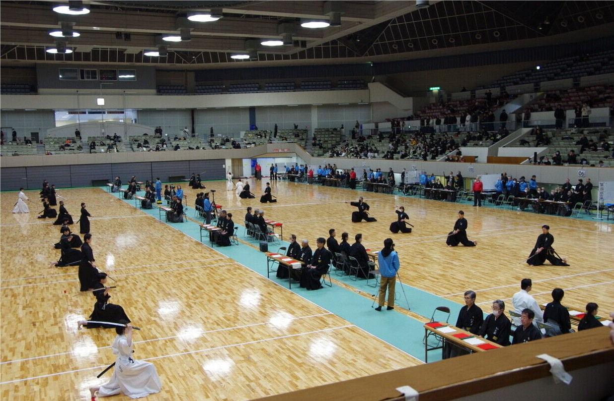

団体紹介
私たちは、熊本市、菊池市、合志市にて、大群和史（おおむれ かずふみ）教士八段の指導のもと、無双直伝英信流（江戸時代から続く武術であり、土佐藩の御留流として藩内で継承されてきた居合道の流派）を３つの会派（無双会、興心会、雄叫会）にわかれ、日本古来の伝統武術の継承と
身体を養い精神を培うため、日々研鑽に励んでいます。
また、当団体は全日本剣道連盟に所属し、連盟の規定に則り、活動しています。
（総勢３２名（男性２６名 女性６名））
【居合道修行の目的】
- 居合を正しく学び、その技法を修行し、質実剛健の気風を養い、健康な身体を作ること
- 居合（武道）の本質をよく理解し、よき師・先輩について精神的教養を身につけ、よって人間形成につとめること
活動内容
形稽古
演武会
居合道大会
